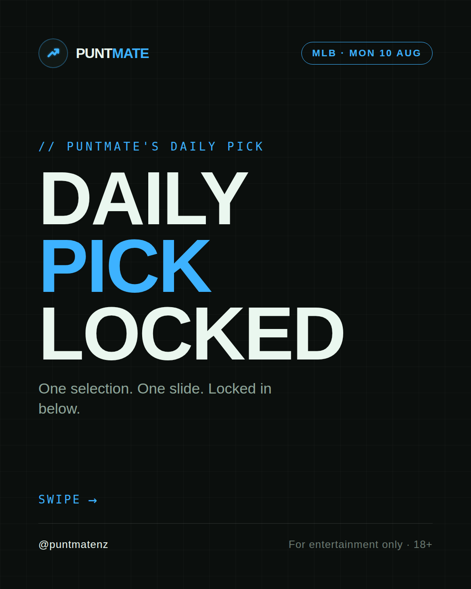
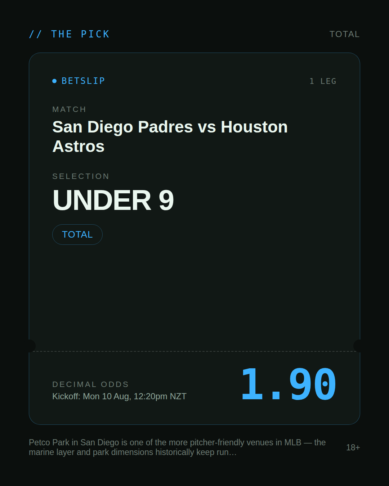
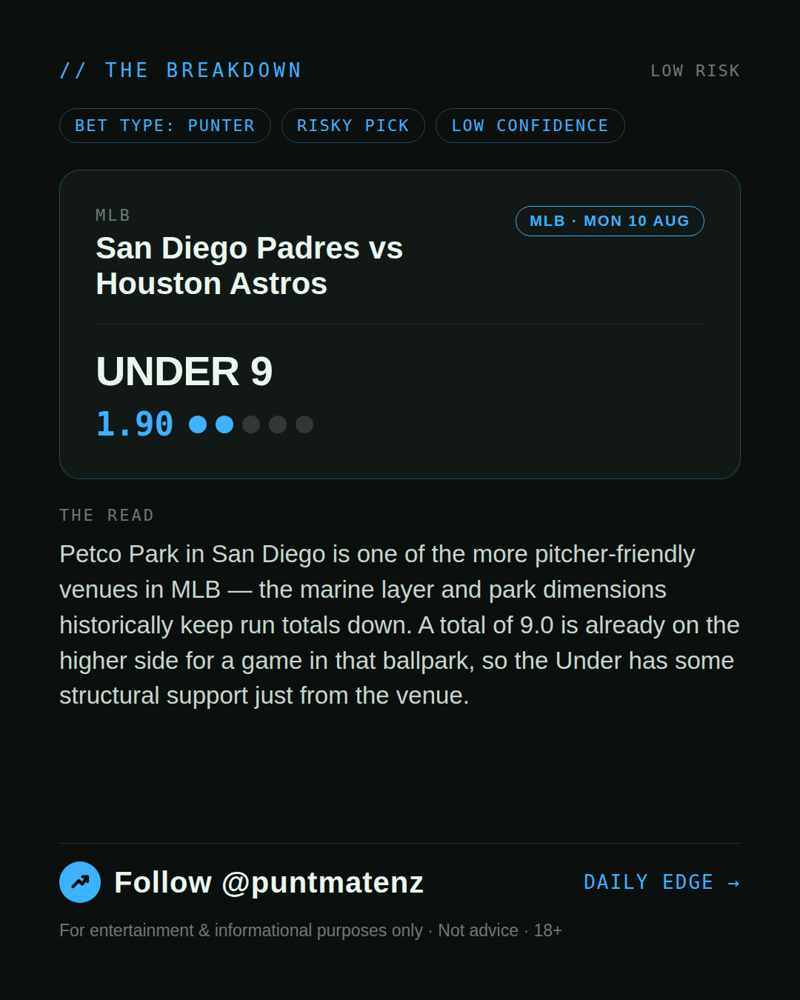
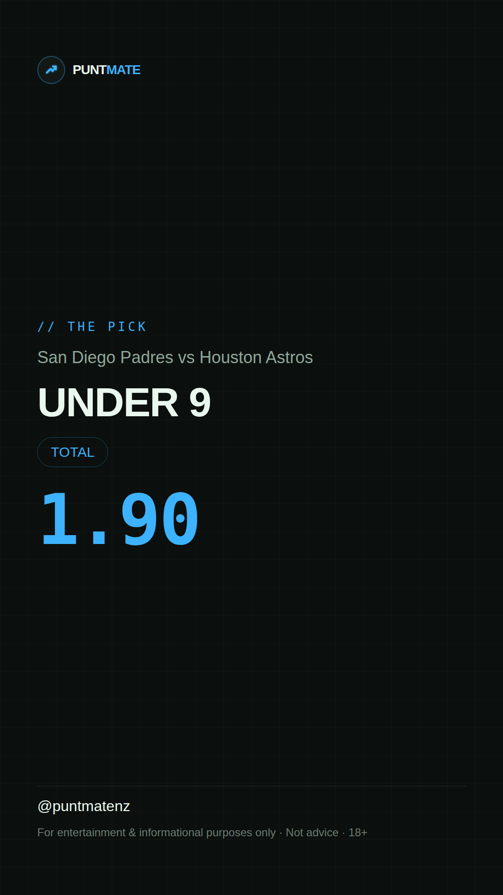

*🎯 PUNTMATE NZ — MLB* 🏟 San Diego Padres vs Houston Astros *PICK:* UNDER 9 *ODDS:* 1.90 (Total) *BET TYPE: PUNTER* _Petco Park in San Diego is one of the more pitcher-friendly venues in MLB — the marine layer and park dimensions historically keep run totals down. A total of 9.0 is already on the higher side for a game in that ballpark, so the Under has some structural support just from the venue._ ────────────────── 📲 Join Telegram for daily picks ⚠️ For entertainment & informational purposes only. Not advice. 18+.
🎯 MLB — San Diego Padres vs Houston Astros UNDER 9 @ 1.90 (Total) BET TYPE: PUNTER Solid touch here. Not a lock, but the value's real and the form backs it up. Petco Park in San Diego is one of the more pitcher-friendly venues in MLB — the marine layer and park dimensions historically keep run totals down. A total of 9.0 is already on the higher side for a game in that ballpark, so the Under has some structural support just from the venue. Follow for daily value picks → @puntmatenz ⚠️ For entertainment & informational purposes only. Not advice. 18+. #PuntmateNZ #SportsBetting #NZTAB #MLB
| has_pick | True |
| pick_id | 2026-08-09_San_Diego_Padres_vs_Houston_Astros |
| run_id | 31334792728 |
| generated_at | 2026-08-09T20:40:25.357140+00:00 |
| post_date | 2026-08-09 |
| match | San Diego Padres vs Houston Astros |
| sport | baseball_mlb |
| sport_label | MLB |
| market | Total |
| selection | UNDER 9 |
| odds | 1.90 |
| bet_type | PUNTER_BET |
| bet_type_label | BET TYPE: PUNTER |
| bet_type_reason | Solid touch here. Not a lock, but the value's real and the form backs it up. Petco Park in San Diego is one of the more pitcher-friendly venues in MLB — the marine layer and park dimensions historically keep run totals down. A total of 9.0 is already on the higher side for a game in that ballpark, so the Under has some structural support just from the venue. |
| classification | RISKY_PICK |
| risk | RISKY_PICK |
| confidence | LOW |
| confidence_label | LOW |
| final_explanation | Petco Park in San Diego is one of the more pitcher-friendly venues in MLB — the marine layer and park dimensions historically keep run totals down. A total of 9.0 is already on the higher side for a game in that ballpark, so the Under has some structural support just from the venue. |
| public_caution | Keep this one light — the value's there but so is the uncertainty. |
| theme | night |
| carousel_paths | ['data/review/2026-08-09_San_Diego_Padres_vs_Houston_Astros/cover.png', 'data/review/2026-08-09_San_Diego_Padres_vs_Houston_Astros/tip.png', 'data/review/2026-08-09_San_Diego_Padres_vs_Houston_Astros/breakdown.png'] |
| carousel_urls | ['https://raw.githubusercontent.com/kingofthecastle24/puntmate/main/data/cards/2026-08-09_San_Diego_Padres_vs_Houston_Astros_night_1_cover.png', 'https://raw.githubusercontent.com/kingofthecastle24/puntmate/main/data/cards/2026-08-09_San_Diego_Padres_vs_Houston_Astros_night_2_tip.png', 'https://raw.githubusercontent.com/kingofthecastle24/puntmate/main/data/cards/2026-08-09_San_Diego_Padres_vs_Houston_Astros_night_3_breakdown.png'] |
| story_path | data/review/2026-08-09_San_Diego_Padres_vs_Houston_Astros/story.png |
| story_url | https://raw.githubusercontent.com/kingofthecastle24/puntmate/main/data/cards/2026-08-09_San_Diego_Padres_vs_Houston_Astros_night_story.png |
| intended_platforms | ['telegram', 'instagram_feed', 'instagram_story', 'facebook'] |
| workflow_state | GENERATED |
| has_punter_multi | False |
| has_gambler_multi | False |
| has_degenerate_multi | False |